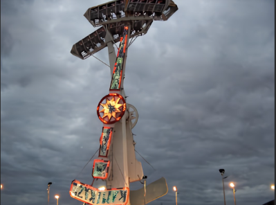

Una casa del terror, también conocida como mansión encantada o pasaje del terror, es una atracción en un parque de diversiones que simula la visita a una estructura habitada por seres sobrenaturales. En estos espacios, los visitantes se enfrentan a escenas de terror y sorpresas escalofriantes
El martillo
Martillo gigante que pondra a prueba tu valor y sacara tu adrenalina maxima.

La rueda gigante
La rueda gigante, también conocida como noria, es una atracción de parques de diversiones que consiste en una rueda vertical giratoria con varias cabinas o góndolas unidas a su borde. Los pasajeros suben y bajan gradualmente mientras giran 360 grados junto con la rueda
Las sillas voladoras
Es un divertido carrusel de columpios que se elevará y girará, ¡parecerá que puedas tocar los árboles! Disfruta de este clásico cargado de historia.
Y como no nuestra gran caida libre
Consiste en elevar una góndola a lo alto de una torre y dejarla caer libremente al suelo. Este tipo de atracciones son muy comunes en los parques de atracciones de todo el mundo y suelen provocar sensaciones fuertes.
Mantenimiento
Contamos con un gran equipo de mantenimientos, como asi tambien con tiendas de comidas,baños y lugares para el descanso.